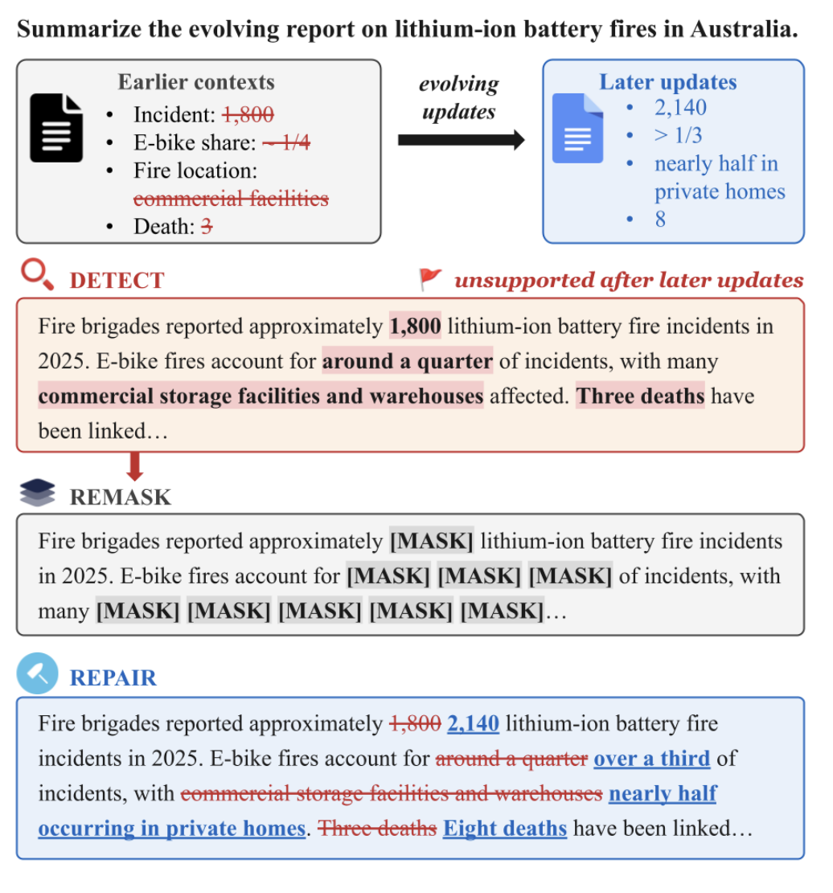
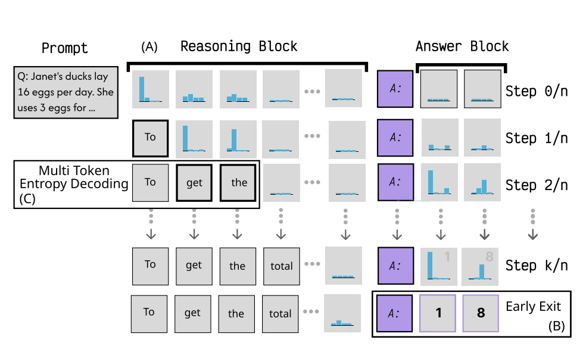
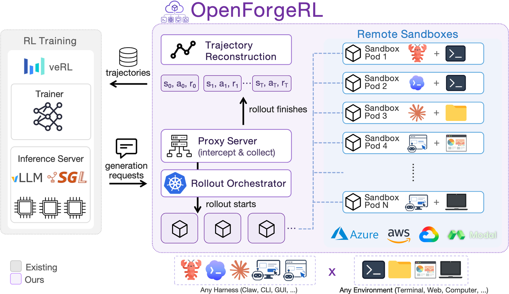
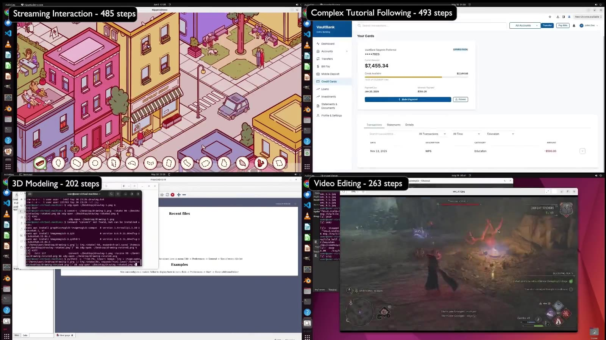
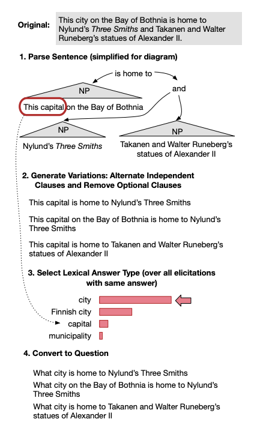
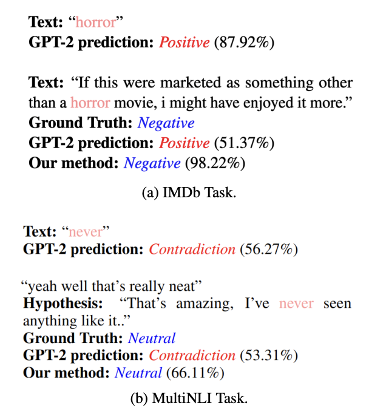

EMNLP 2026, oral
Detect, Remask, Repair: Diffusion Editing for Faithful Summarization of Evolving Contexts
Hao Zou, Zachary Horvitz, Chandhru Karthick, Zhou Yu, Kathleen McKeown
I'm Hao Zou. I work on diffusion language models and LLM agents at Columbia.
A summary goes stale. A chain of reasoning commits to the wrong number. An agent drifts two hundred steps into a task. The fix I work on is the same loop each time: draft, verify, then repair only what failed.

Hao Zou, Zachary Horvitz, Chandhru Karthick, Zhou Yu, Kathleen McKeown

Zachary Horvitz, Raghav Singhal, Hao Zou, Carles Domingo-Enrich, Zhou Yu, Rajesh Ranganath, Kathleen McKeown

Xiao Yu, Baolin Peng, Ruize Xu, Hao Zou, Qianhui Wu, Hao Cheng, Wenlin Yao, Nikhil Singh, Zhou Yu, Jianfeng Gao

A 36-author collaboration led by XLANG Lab; I contributed long-horizon workflows
Three threads start in undergraduate labs and meet at the right edge. Click a stop to fly to it, or walk all ten chapters with the arrow keys.

Turning expert trivia into natural questions for QA training, with Jordan Boyd-Graber. EMNLP 2024.

A causal-inference-inspired debiasing method for in-context learning, up to +22 points, with Dongyeop Kang.
Multi-style controllable generation trained with PPO: +31.2% human-judged style alignment.
Diffusion against flow-matching benchmarks; KV-cache quantization with 50% less memory and 2× faster inference in the evaluated setup.
Diffusion was a side project in 2023. It became the main line.
From a survey, to reading a model's confidence mid-thought, to a method that edits only what is wrong, to a system and a speed-up built around it.
A diffusion model can change the middle of a sentence without touching the rest. That one property is what the rest of this thread is built on.
If a model can rewrite any position, can it also tell us what it believes before it finishes?
Lay the output out as a reasoning block and an answer block. The model then reports its belief about the answer at every step of reasoning, at no extra cost. When the belief settles, stop.
My part. Third author. I co-developed reasoning-as-infilling, answer-conditioned posterior reasoning, the uncertainty-aware early exit, and the validation of intermediate reasoning.
The model can tell when its answer has settled. Can a model tell when a sentence has stopped being true?
Summaries of live events go out of date as new reports arrive. Regenerating is slow and rewrites what was fine. Detect, Remask, Repair scores every word against the new evidence, remasks the risky spans, and lets a masked diffusion model infill only those.
Local repair wins when the draft is still mostly reusable. When an event is overturned, rewriting wins. I report both.
Mask a fact in a faithful pair, let a diffusion model refill it, and its fluent wrong guesses become token-level negatives for the detector.
To test repair on real revisions I built StreamSum: event timelines grown from real news seeds (2,000 train, 500 validation, 500 test), each with an early report and a later update that revises a fact.
Repair works in a paper. Does it hold up with an analyst reading over its shoulder?
The Living Report updates as evidence arrives and changes only the affected passages. Every edit is versioned, and every claim links to its source.
My part. I lead development of the demo, integrating the team's repair, contamination-detection and question-answering components into one system, and I built the project website.
In a live system a nine-second repair is too slow. The next question was speed.
A live meeting summary has to evolve with the discussion. Regenerating it wastes computation; copying the old one carries outdated text forward. A drafter proposes, the target model verifies, and only verified tokens are committed.
My part. I adapted a Qwen3.5-9B target to meeting summarization, trained a matching multi-token-prediction drafter on that target's outputs, and evaluated three ways to cut drafting cost: a reduced vocabulary, copy-and-verify from the previous summary, and a parallel drafter.
The largest gain came from making each draft step cheaper. Reusing the previous summary added a little. Drafting in parallel did not, by itself, make updates faster. That points to a learned policy for when to copy, when to draft, and how to use what the verifier rejects.
| Parallel drafter (DFlash) objective | Update speed |
|---|---|
| Cross-entropy | 0.798× |
| On-policy distillation | 0.854× |
| With a feature-distribution (MMD) loss | 0.824× |
| Scope of each result | |
|---|---|
| 1,024 / 1,024 identical | 16K MTP8 against full-vocabulary MTP8 only. Not a claim of equivalence with autoregressive decoding. |
| Copy and verify | Separate 64-agenda run: 1.027× (95% paired bootstrap interval 1.015 to 1.040×), 512 / 512 identical. The copy rule is hand-written, not learned. |
| Output quality | AlignScore 0.585 for autoregressive and 0.582 for both drafting variants. Point estimates. |
Text can be drafted, checked and repaired. Actions are harder: there is no undo, and the check arrives hundreds of steps later.
With Xiao Yu in Zhou Yu's group I moved to long-horizon agents. The questions are the ones above, with an environment standing in for the source document.
108 computer-use workflows that take a skilled person a median of 1.6 hours, across desktop applications and 31 self-hosted websites.
Agents rarely fail at clicking or coding. They lose a constraint, miss what arrives mid-task, guess instead of asking, and skip verification.
My part. I contributed long-horizon computer-use workflows to the benchmark.
| OSWorld 1.0 | OSWorld 2.0 | |
|---|---|---|
| Average agent steps per task | under 30 | over 250 |
| Tasks spanning several apps | a minority | the majority |
| Self-hosted websites | none | 31 |
| Input files | mixed or synthetic | authentic |
| Cross-source reasoning | 46 tasks (42.6%) | |
| Dynamic environment | 10 tasks (9.3%) |
A benchmark shows where agents break. Fixing them means training in the setting they are deployed in.
Agents run inside harnesses like Claude Code, Codex and OpenClaw, but open RL stacks cannot express that stateful inference. OpenForgeRL adds a proxy that records the harness's model calls as training data, and an orchestrator that runs every rollout in its own remote sandbox.
Self-verification, tool coverage and finishing multi-step plans all improve.
The ability agents need most on long tasks is the one training helped least.
Some are much harder to learn than others, so the harness is part of the result.
My part. Co-author. I worked on connecting agent harnesses and isolated rollout environments to scalable SFT and RL training.
With rollouts this long, the training data itself goes stale.
Synchronous RL waits for the slowest rollout, so GPUs sit idle. Asynchronous RL keeps them busy, but by the time a trajectory is used, the policy that produced it is several updates old. I am comparing synchronous, asynchronous and single-rollout asynchronous (SAO) training in ALFWorld, to measure what that staleness costs.
Three threads, and the same loop in each.
Each project produces a draft, checks it against something outside the generator, and then changes as little as possible. What differs is the size of the thing being checked.
What I want to build in a PhD
Direction one
Autoregressive models reason well in causal order. Masked diffusion models decode in parallel and can reopen any position, and scaled-up ones such as LLaDA 2.0 and Mercury 2 now support tool calling. I want to treat the autoregressive model as the target and the diffusion model as the drafter, and learn the policy that routes between them over a long task.
Builds on speculative decoding, reasoning as infilling and localized repair. Background: LLaDA 2.0, Mercury 2.
Direction two
Post-train diffusion language models on agentic tasks such as ALFWorld, WebShop and ScienceWorld, for higher success and lower latency. I want to carry over what is working for autoregressive agents: asynchronous training, partial rollouts, MiMo-style methods and single-rollout optimization.
Builds on OpenForgeRL and the staleness study. Background: Sandwiched Policy Gradient, Mask-Aware Policy Gradients, stepwise advantages for diffusion LLMs.
Policy gradients need the log-probability of what the policy produced. A masked diffusion model would have to sum over every order in which positions could have been unmasked.
The evidence lower bound only bounds the likelihood from below. That biases the gradient, most of all when a bad output has to be pushed down.
Each step chooses what to write and where. Remasking, the ability I care about most, breaks the one-way process that most current methods assume.
Direction three, and open to it
General-purpose models have started to control robots directly. Recent evaluations of GPT-6 Astra report real competence, and a clear gap between semantic reasoning and physical execution. I want to find out where that gap sits. My guess is in what language describes poorly: deformable objects, contact, spatial precision. I would like to build the benchmarks and data that measure it.
I trained diffusion policies for simple manipulation, picking up cubes and flipping objects, during a short internship in Yunzhu Li's lab. That is where deformability and spatial awareness stopped being abstractions for me.
Background: direct robot control with GPT-6 Astra, Has GPT-6-Astra Achieved Embodied Intelligence?, ESI-Bench on embodied spatial intelligence.
This work has been supported by the IARPA BENGAL program and by Capital One.